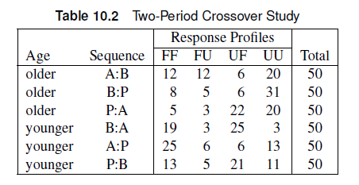

The likelihood for \(y_{hi}\) can be written as:
\[ P(y_{hi} = \pi_{hi} = \frac{\exp[\alpha_h + \beta x_{hi} + \sum_g \gamma'_g z_{hig}]}{1+ \exp[\alpha_h + \beta x_{hi} + \sum_g \gamma'_g z_{hig}]}) \]
Note
\(\alpha_h\) is an intercept for the \(h^{th}\) center (strata), \(\beta\) is the treatment parameter, and \(\gamma'\) is the parameter of covariates \(z\). Note that there are a lot of parameters, which may lead to biased estimates with only two patients per center.
Nuisance parameters
We can fit a model based on probabilities conditioned on the center effects. After conditioning, the center dependent intercept \(\alpha_h\) would not be important. This is why \(\alpha_h\) is referred to as a nuisance parameter.
We condition the result to a specific “sufficient statistic” or event.
Note
In the example, the events considered could be concordant (both showed no effect or both improved) or discordant (only one improved per clinic) outcomes.
In the case of the cohort study, we can condition on the case that exactly one of the participants in each clinic will show improvement.
Note
The improvement could be observed in the test participants (\(y_{h1}=1\), \(y_{h2}=0\)) or the placebo participants (\(y_{h1}=0\), \(y_{h2}=1\)). Either way, \(y_{h1}+y_{h2}=1\).
The conditional probability that the test participant improved conditioning on the discordant outcome that exactly one of the participants in each clinic will show improvement is:
\[ P((y_{h1},y_{h2}) = (1,0) | y_{h1}+y_{h2}=1) = \frac{P(y_{h1}=1)P(y_{h2}=0)}{P(y_{h1}=1)P(y_{h2}=0) + P(y_{h1}=0)P(y_{h2}=1)} \]
Note
Performing the mathematical calculations, we will end up with a likelihood independent of \(\alpha_h\), which means we effectively removed center-only terms in our model.
Note
The conditional likelihood applies to paired data can be written as a simple case of the Cox proportional hazards model, which is used in the analysis of survival times.
STRATA statement allows us to add the stratification variables when there is a small sample size per strata.Note
You should establish which variables are stratification variables and which ones are covariates.
The data listed below includes data from a study about the effect of a new treatment on a skin condition. The data were collected from 79 clinics. In each clinic, one patient received the treatment, and another received a placebo. Demographic variables such as age, sex, and initial grade for the skin condition (1-4, mild to severe) was collected. The response variable was whether the skin condition improved.
data trial;
input center treatment $ sex $ age improve initial @@;
datalines;
1 t f 27 0 1 1 p f 32 0 2 41 t f 13 1 2 41 p m 22 0 3
2 t f 41 1 3 2 p f 47 0 1 42 t m 31 1 1 42 p f 21 1 3
3 t m 19 1 4 3 p m 31 0 4 43 t f 19 1 3 43 p m 35 1 3
4 t m 55 1 1 4 p m 24 1 3 44 t m 31 1 3 44 p f 37 0 2
5 t f 51 1 4 5 p f 44 0 2 45 t f 44 0 1 45 p f 41 1 1
6 t m 23 0 1 6 p f 44 1 3 46 t m 41 1 2 46 p m 41 0 1
7 t m 31 1 2 7 p f 39 0 2 47 t m 41 1 2 47 p f 21 0 4
8 t m 22 0 1 8 p m 54 1 4 48 t f 51 1 2 48 p m 22 1 1
9 t m 37 1 3 9 p m 63 0 2 49 t f 62 1 3 49 p f 32 0 3
10 t m 33 0 3 10 p f 43 0 3 50 t m 21 0 1 50 p m 34 0 1
11 t f 32 1 1 11 p m 33 0 3 51 t m 55 1 3 51 p f 35 1 2
12 t m 47 1 4 12 p m 24 0 4 52 t f 61 0 1 52 p m 19 0 1
13 t m 55 1 3 13 p f 38 1 1 53 t m 43 1 2 53 p m 31 0 2
14 t f 33 0 1 14 p f 28 1 2 54 t f 44 1 1 54 p f 41 1 1
15 t f 48 1 1 15 p f 42 0 1 55 t m 67 1 2 55 p m 41 0 1
16 t m 55 1 3 16 p m 52 0 1 56 t m 41 0 2 56 p m 21 1 4
17 t m 30 0 4 17 p m 48 1 4 57 t f 51 1 3 57 p m 51 0 2
18 t f 31 1 2 18 p m 27 1 3 58 t m 62 1 3 58 p m 54 1 3
19 t m 66 1 3 19 p f 54 0 1 59 t m 22 0 1 59 p f 22 0 1
20 t f 45 0 2 20 p f 66 1 2 60 t m 42 1 2 60 p f 29 1 2
21 t m 19 1 4 21 p f 20 1 4 61 t f 51 1 1 61 p f 31 0 1
22 t m 34 1 4 22 p f 31 0 1 62 t m 27 0 2 62 p m 32 1 2
23 t f 46 0 1 23 p m 30 1 2 63 t m 31 1 1 63 p f 21 0 1
24 t m 48 1 3 24 p f 62 0 4 64 t m 35 0 3 64 p m 33 1 3
25 t m 50 1 4 25 p m 45 1 4 65 t m 67 1 2 65 p m 19 0 1
26 t m 57 1 3 26 p f 43 0 3 66 t m 41 0 2 66 p m 62 1 4
27 t f 13 0 2 27 p m 22 1 3 67 t f 31 1 2 67 p m 45 1 3
28 t m 31 1 1 28 p f 21 0 1 68 t m 34 1 1 68 p f 54 0 1
29 t m 35 1 3 29 p m 35 1 3 69 t f 21 0 1 69 p m 34 1 4
30 t f 36 1 3 30 p f 37 0 3 70 t m 64 1 3 70 p m 51 0 1
31 t f 45 0 1 31 p f 41 1 1 71 t f 61 1 3 71 p m 34 1 3
32 t m 13 1 2 32 p m 42 0 1 72 t m 33 0 1 72 p f 43 0 1
33 t m 14 0 4 33 p f 22 1 2 73 t f 36 0 2 73 p m 37 0 3
34 t f 15 1 2 34 p m 24 0 1 74 t m 21 1 1 74 p m 55 0 1
35 t f 19 1 3 35 p f 31 0 1 75 t f 47 0 2 75 p f 42 1 3
36 t m 20 0 2 36 p m 32 1 3 76 t f 51 1 4 76 p m 44 0 2
37 t m 23 1 3 37 p f 35 0 1 77 t f 23 1 1 77 p m 41 1 3
38 t f 23 0 1 38 p m 21 1 1 78 t m 31 0 2 78 p f 23 1 4
39 t m 24 1 4 39 p m 30 1 3 79 t m 22 0 1 79 p m 19 1 4
40 t m 57 1 3 40 p f 43 1 3
;proc logistic data=trial;
class treatment(ref="p") /param=ref;
1strata center;
model improve(event="1")= treatment;
run;After adding the covariates, only the initial skin condition rating was added to the model. There is a significant effect of initial skin condition (\(\chi^2\) = 10.57, p=0.0143), and a marginal effect of treatment ($^2 $= 2.93, p=0.09). The odds of improvement in the treatment group is 1.87 (0.914, 3.82) times that of the placebo group. The odds of improvement for severe initial skin condition is 26.5 (2.4, 292) times that of mild initial skin condition.
Note that the answers will be different if you treated the initial skin condition as a continuous variable.
The dataset CORRECT includes data from a study that asked pairs of individuals to interpret a visual infographic regarding health disparities arising from the COVID-19 pandemic. Each participant was asked about their occupations. The response variable was whether they correctly interpreted the infographic (1) or not (0). Implement a conditional logistic regression analysis to determine whether occupation affects the accuracy of interpretation of visual infographics.
data correct;
format occupation $10.;
input pair Occupation $ Correct;
datalines;
1 STEM 0
1 Other 0
2 Other 0
2 Healthcare 1
3 Healthcare 0
3 Other 0
4 Other 0
4 STEM 0
5 Healthcare 0
5 Healthcare 0
6 Healthcare 0
6 STEM 0
7 STEM 0
7 Healthcare 1
8 STEM 0
8 Healthcare 1
9 Healthcare 0
9 Healthcare 1
10 Other 0
10 STEM 0
11 Healthcare 1
11 STEM 1
12 Other 0
12 Healthcare 0
13 Healthcare 0
13 Healthcare 1
14 STEM 0
14 STEM 0
15 Healthcare 0
15 Healthcare 1
16 Other 0
16 STEM 0
17 Other 0
17 STEM 0
18 STEM 0
18 Healthcare 0
19 Healthcare 1
19 Other 1
20 Other 0
20 Healthcare 0
21 Other 0
21 Other 0
22 Other 1
22 Healthcare 1
23 Healthcare 0
23 Healthcare 1
24 Other 0
24 Healthcare 0
25 Healthcare 1
25 STEM 0
26 STEM 0
26 Healthcare 1
27 Other 1
27 Healthcare 1
28 Other 1
28 Healthcare 0
29 Healthcare 0
29 STEM 0
30 Other 0
30 Other 0
31 Other 1
31 Healthcare 0
32 Healthcare 0
32 Other 1
33 STEM 0
33 Other 0
34 Other 0
34 STEM 1
35 Healthcare 0
35 Healthcare 0
36 Healthcare 0
36 Healthcare 1
37 Other 0
37 Healthcare 0
38 Healthcare 0
38 Other 1
39 Healthcare 0
39 Other 0
40 Other 0
40 Other 1
41 Healthcare 1
41 Healthcare 0
42 Other 0
42 Other 0
43 Other 1
43 STEM 0
44 Other 1
44 Healthcare 0
45 STEM 0
45 STEM 0
46 Healthcare 0
46 Healthcare 0
47 Healthcare 0
47 Other 1
48 Healthcare 0
48 Healthcare 0
49 Other 0
49 STEM 1
50 Healthcare 0
50 Healthcare 0
;The dataset CORRECT includes data from a study that asked pairs of individuals to interpret a visual infographic regarding health disparities arising from the COVID-19 pandemic. Each participant was asked about their occupations. The response variable was whether they correctly interpreted the infographic (1) or not (0). Implement a conditional logistic regression analysis to determine whether occupation affects the accuracy of interpretation of visual infographics.
Patients were stratified according to two age groups and then assigned to one of three treatment sequences. Responses were measured as favorable (F) or unfavorable (U); thus, FF indicates a favorable response in both Period 1 and Period 2. The data is included in the SAS file as CROSS2.

data cross1 (drop=count);
input age $ sequence $ time1 $ time2 $ count;
do i=1 to count;
output;
end;
datalines;
older AB F F 12
older AB F U 12
older AB U F 6
older AB U U 20
older BP F F 8
older BP F U 5
older BP U F 6
older BP U U 31
older PA F F 5
older PA F U 3
older PA U F 22
older PA U U 20
younger BA F F 19
younger BA F U 3
younger BA U F 25
younger BA U U 3
younger AP F F 25
younger AP F U 6
younger AP U F 6
younger AP U U 13
younger PB F F 13
younger PB F U 5
younger PB U F 21
younger PB U U 11
;
data cross2; set cross1;
subject=_n_;
period=1;
drug = substr(sequence, 1, 1);
carry='none';
response =time1;
output;
period=2;
drug = substr(sequence, 2, 1);
carry = substr(sequence, 1, 1);
if carry='P' then carry='none';
response =time2;
output;
run;proc logistic data=cross2;
class drug period age carry / param=ref;
strata subject;
1model response = period drug period*age carry;
A_B: test drugA=drugB;
oddsratio drug;
run;carry.
Since there is no significant carryover effect, we can remove it from the model.
There is no significant carryover effect. At a significance level of 0.05, there is no significant interaction effect. There is a significant drug effect (\(\chi^2\) = 18.7, p=0.001). The odds of a favorable response with drug A is 3.84 (2.02, 7.32) times that for the placebo and 2.95 (1.55, 5.59) times that for drug B.
data endo;
do ID=1 to 63;
do Outcome = 1 to 0 by -1;
input Gall Hyper @@;
output;
end;
end;
datalines;
0 0 0 0 0 0 0 0 0 1 0 1 0 0 1 0 1 0 0 1
0 1 0 0 1 0 0 0 1 1 0 1 0 0 0 0 0 0 0 0
1 0 0 0 0 0 0 1 1 0 0 1 1 0 1 0 1 0 0 1
0 1 0 0 0 0 1 1 0 0 1 1 0 0 0 1 0 1 0 0
0 0 1 1 0 1 0 1 0 1 0 0 0 0 0 0 0 0 0 0
0 0 0 1 1 0 0 1 0 0 0 1 1 0 0 0 0 1 0 0
0 1 0 0 0 1 0 0 0 1 0 0 0 0 0 0 1 1 1 1
0 0 0 1 0 1 0 0 0 1 0 1 0 1 0 1 0 1 0 0
0 0 0 0 0 1 1 0 0 0 0 1 0 0 0 0 1 0 0 0
0 0 0 0 1 1 0 0 0 1 0 0 0 0 0 0 0 1 0 1
0 0 0 0 0 1 0 1 0 1 0 0 0 1 0 0 1 0 0 0
0 0 0 0 1 1 1 0 0 0 0 0 0 0 0 0 1 1 0 0
1 0 1 0 0 1 0 0 1 0 0 0
;There is marginal association between history of gallbladder disease (\(\chi^2\) = 3.34, p=0.07) and endometrial cancer, but there is no evidence of an association between hypertension and endometrial cancer (\(\chi^2\) = 0.85, p=0.36). The odds of developing endometrial cancer is 164% higher for those with gallbladder disease (OR: 2.64, 95% CI: 0.93, 7.5)
The data set CARDIO includes data from a cardiovascular study of eight animals who received various drug treatments. Researchers then arrested coronary flow, which led to the development of regional ischemia, and they recorded whether an adverse cardiovascular event occurred during an eight-minute interval. The heart was re-perfused for 50 minutes to allow the heart to return to normal, and then another treatment was tested. Thus, there are up to five repeated measurements on eight animals. The treatments are: (1) Control (C), (2) Test Drug with counteracting agent (DA), (3) Low dose test drug (D1), (4) High dose test drug (D2).
The treatment S indicates the placement of intracoronary artery catheter, which is dropped in the final data set.
data cardio;
input animal treatment $ response $ @@;
if treatment='S' then delete;
else if treatment='C' then ordtreat=1;
else if treatment='DA' then ordtreat=2;
else if treatment='D1' then ordtreat=3;
else if treatment='D2' then ordtreat=4;
datalines;
1 S no 1 C no 1 C no 1 D2 yes 1 D1 yes
2 S no 2 D2 yes 2 C no 2 D1 yes
3 S no 3 C yes 3 D1 yes 3 DA no 3 C no
4 S no 4 C no 4 D1 yes 4 DA no 4 C no
5 S yes 5 C no 5 DA no 5 D1 no 5 C no
6 S no 6 C no 6 D1 yes 6 DA no 6 C no
7 S no 7 C no 7 D1 yes 7 DA no 7 C no
8 S yes 8 C yes 8 D1 yes
;
data cardio;
set cardio;
drop treatment;
run;We treat the treatments as an ordinal variable with equal separation. Based on the exact analysis, there is a significant effect of treatment (p=0.0017). The odds of an adverse event becomes seven times higher with each unit change in treatment level.
Chapter 10- Back to home